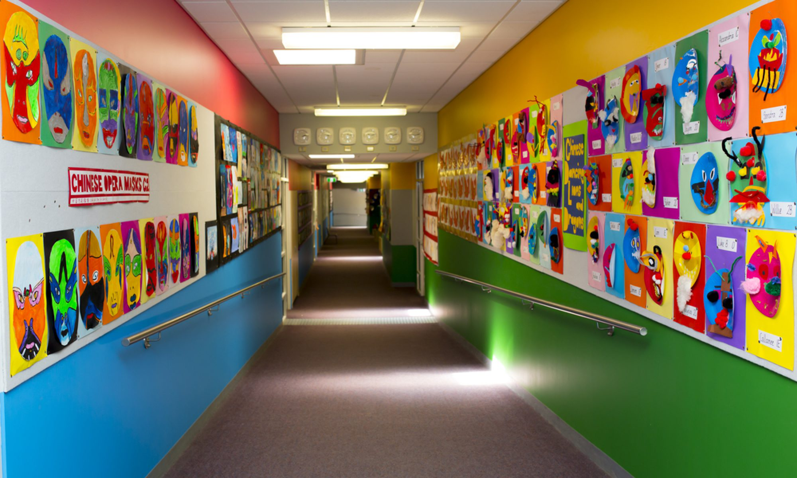
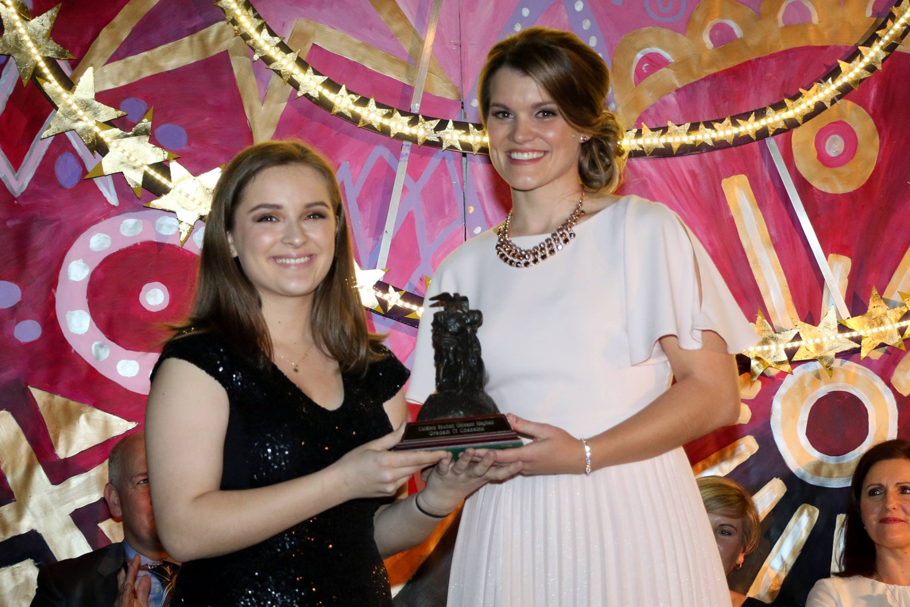

Education

I chose to study Business Information Systems because it's quite a broad degree course that allows you to learn and build on numerous different skills that will help you in the workplace, along with a 6 month placement in third year.
Primary School: I attended St. Joseph's N.S. in Glanmire for the years 2003-2011.
Secondary School: I attended Glanmire Community College for the years 2011-2017.
Below is a picture of one of the highlights of my time in GCC, winning the 'Music Student of the Year Award'.
